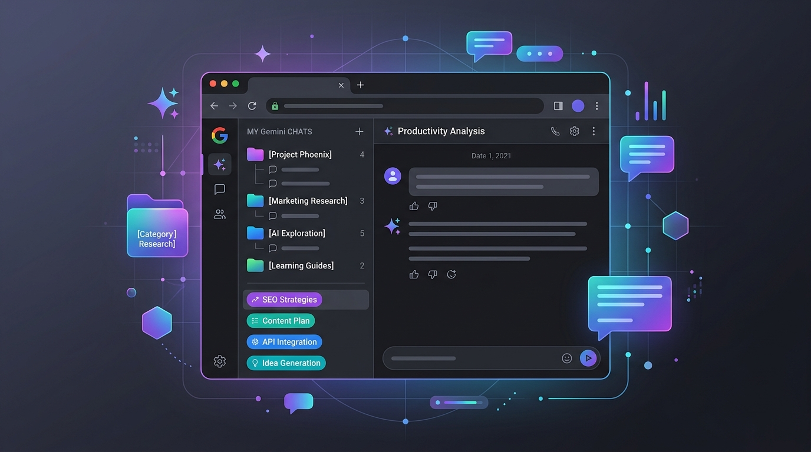

Gemini’s chat list doesn’t have classic folders: chats are listed newest first. What you can do today is rename and pin chats, use Gemini’s notebooks where they are available, or add folders with a third-party extension. Another approach works across every AI tool: save the chat’s link into a project group in Chrome, with a note about what the chat was for. LB TAB Layers does this with Chrome bookmarks.
If you use Gemini every day, the chat list fills up fast. Work questions, a trip plan, a coding problem and a draft email all end up in one long list, sorted by date. A week later, finding “that answer about the pricing table” means scrolling and guessing.
Here are the options, from what Gemini itself offers to a browser-side approach that works for Gemini, ChatGPT and Claude alike.
Why Gemini chats get messy
- The chat list in the sidebar is ordered by recent activity, not by topic.
- There are no classic folders or tags for individual chats.
- Search helps, but only if you remember a word that was in the chat.
- Titles are created automatically, so similar chats can look alike.
Google adds features to Gemini often, so check your own sidebar too. What is available can depend on your account type, region and app.
1. Rename chats with a simple prefix
You can rename a chat: hover over it in the list, open its ⋮ menu and choose Rename. Give every chat a short prefix for the project or topic:
- [Work] Q3 proposal outline
- [Code] Python scraper error
- [Travel] Kyoto itinerary
- [Blog] Title ideas for the launch post
It costs five seconds per chat, and the list becomes far easier to scan and search. The key is to do it right after the chat, before you forget what it was about.
2. Pin the chats you return to
From the same ⋮ menu, choose Pin. Pinned chats stay at the top of the list. Use this for a handful of chats you open again and again, such as a long-running project or a prompt you reuse. Keep the pinned list short, or it turns into a second messy list.
3. Use Gemini notebooks, if you have them
Google has been rolling out notebooks in the Gemini app: a space for one project that keeps related chats, sources and instructions together. Where they are available, you can add an existing chat from its menu with Add to notebook. This is the closest thing to a built-in folder.
Some things to know, based on Google’s help at the time of writing: the rollout is gradual, some notebook features need Gemini’s activity setting turned on, and deleting a notebook also deletes the chats in it. Check Google’s help page for the current details.
4. Folder extensions for the Gemini page
Several Chrome extensions add folders directly inside the Gemini website, so you can drag chats into them. They can work well, but keep in mind:
- They are not made by Google, and a change to Gemini’s page can break them.
- They need access to the Gemini page, where your chats are. Read the permissions and the privacy policy, especially if you discuss work there.
- If the extension stops being maintained, your folders may go with it.
5. Keep chats by project in your browser
A different idea: instead of organizing inside Gemini, organize in your browser. Every Gemini chat has its own web address. Save that link into a project folder, and the folder becomes your index, whatever the AI tool.
This works well if you use more than one assistant. A project folder can hold the Gemini chat for research, the ChatGPT chat for a draft and the Claude chat for a code review, next to the documents and pages for the same project.
Plain Chrome bookmarks can do this. A tab manager in the side panel makes it quicker.
Doing it with LB TAB Layers
LB TAB Layers is a Chrome extension that keeps tabs by project in the side panel. Press Alt+T (Option+T on a Mac) to open it.
- Make a group for the project. Click New Group and name it, for example “Launch plan”.
- Save the chat. With the Gemini chat open, click Add current tab on the group. Or right-click the tab in the Tabs view and choose Save to Folder.
- Close the tab. The link is saved as a Chrome bookmark, so closing the tab loses nothing.
- Come back later. Click the saved chat in the group to open it again, or click ▶ to open every tab in the group as a Chrome tab group.

Add a note to the chat
A chat title rarely says why the chat mattered. In Notes, the link button (New note for this page) makes a note for the page you are on. Write down what the chat concluded, the prompt that worked, or what to ask next. The next time you open that chat, the note is right there.

Find it again
The search box in the panel looks through your open tabs, the tabs saved in your groups and today’s history, so a saved chat can be found by its title or project name. It searches the titles and links you saved, not the text of the conversation inside Gemini.
Limits worth knowing
- The chat itself stays in Gemini. A saved link opens the chat in your Gemini account. If you delete the chat in Gemini, the link stops working.
- Links are tied to your account. A saved chat link opens for you when you are signed in. It is not a way to share a chat with someone else.
- Titles are saved when you save. The saved title is the one the tab had when you saved it. If you rename the chat in Gemini later, rename the saved tab too so the two match.
- Group limits. The free plan includes 5 groups. Every PRO feature is free for 90 days after you install.
Which approach to use
- A few chats, one tool: rename with a prefix and pin the important ones.
- Long projects in Gemini only: try notebooks if your account has them.
- Several AI tools, mixed with other work: save chat links into project groups in your browser, with notes.
These combine well. Clear names make everything easier to find, and a project folder in the browser keeps the AI chats next to everything else you need for that work. For more on keeping work in groups, see the quick start and the guide with recorded examples.
Official help
Frequently asked questions
Q. Can I put Gemini chats into folders?
Not as classic folders in the chat list. You can rename and pin chats, and where available, add chats to Gemini notebooks. Third-party extensions can add folders, and you can also save chat links into project folders as Chrome bookmarks.
Q. If I save a Gemini chat link, can I continue the conversation later?
Yes. Opening the saved link takes you to that chat in your Gemini account, as long as you are signed in and the chat has not been deleted.
Q. Can I keep Gemini, ChatGPT and Claude chats in the same folder?
Yes, if you organize in the browser. Each chat has its own link, and LB TAB Layers can save links from any site into the same group.
Q. Does LB TAB Layers search the text of my Gemini chats?
No. It searches the titles and links of your open tabs, saved tabs and today’s history, not the conversation inside Gemini.
▶ See it in action
Managing bookmarks and tabs together in the sidebar. (The video shows the Japanese UI.)
Keep your AI chats by project.
Save Gemini, ChatGPT and Claude chats into groups, with notes. Saved as Chrome bookmarks · No account needed · Every feature free for 90 days
Add to Chrome — it's free →